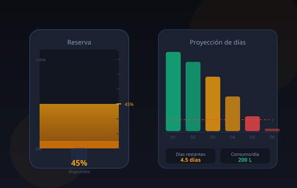
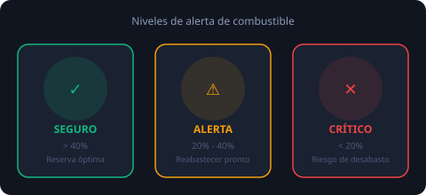
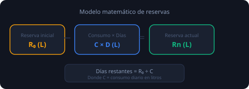

Escasez de carburantes
Bolivia enfrenta períodos de desabastecimiento de combustible que afectan el transporte, la producción y la vida cotidiana de los ciudadanos.
Herramienta educativa para calcular cuántos días durará la reserva de una estación de servicio, detectar niveles críticos y tomar decisiones basadas en datos reales.

Bolivia enfrenta períodos de desabastecimiento de combustible que afectan el transporte, la producción y la vida cotidiana de los ciudadanos.
Las estaciones de servicio deben administrar sus reservas de forma eficiente para garantizar el abastecimiento continuo de la población.
Conocer con anticipación cuándo se alcanzará el nivel crítico permite tomar medidas preventivas antes de llegar al desabastecimiento total.
Reserva diaria = Reserva anterior + Reabastecimiento − Consumo
Esta fórmula simple permite proyectar el comportamiento de la reserva en el tiempo.


Ingresa los datos de la estación de servicio y calcula la proyección de reservas.
Los resultados aparecerán aquí después de calcular
Evolución de la reserva día a día según los parámetros ingresados.
Ejecuta la simulación para ver la proyección día a día
Ejemplos predefinidos para verificar que el simulador funciona correctamente.
| Dato | Valor |
|---|---|
| Reserva inicial | 10,000 L |
| Consumo diario | 1,200 L/día |
| Reabastecimiento | 300 L/día |
| Nivel crítico | 2,000 L |
| Dato | Valor |
|---|---|
| Reserva inicial | 5,000 L |
| Consumo diario | 800 L/día |
| Reabastecimiento | 0 L/día |
| Nivel crítico | 1,000 L |
| Dato | Valor |
|---|---|
| Reserva inicial | 8,000 L |
| Consumo diario | 1,500 L/día |
| Reabastecimiento | 1,500 L/día |
| Nivel crítico | 3,000 L |
Reserva = Reserva anterior + Reabastecimiento − Consumo es suficiente para proyecciones de corto plazo.